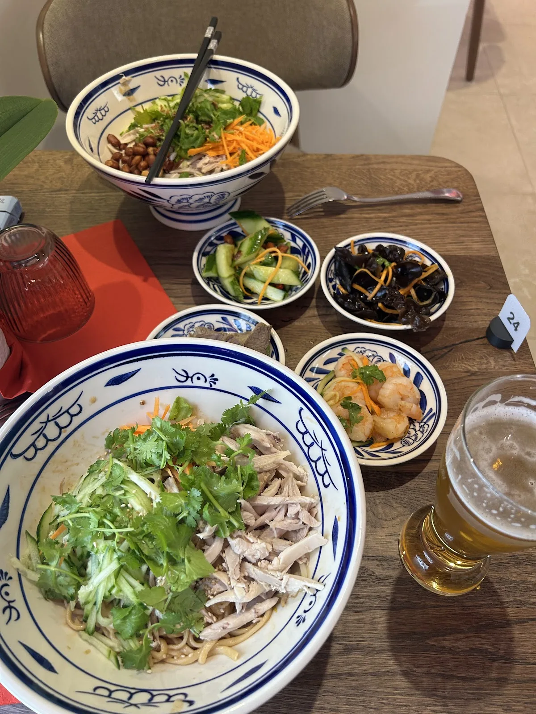

Adresse
13 Bd Eugène Deruelle
69003 Lyon
Cette page a été pensée pour convertir une visite rapide en passage réel sur place : trouver l’adresse, appeler, consulter le menu et lancer l’itinéraire doit prendre quelques secondes, surtout sur mobile.
13 Bd Eugène Deruelle
69003 Lyon
Idéal pour un renseignement rapide ou pour confirmer votre venue.
Du lundi au samedi
12:00 – 21:00
Dimanche fermé
Quartier Part-Dieu, à proximité immédiate de la gare et des bureaux.
Oui. La page menu rassemble les grands repères de la carte et le PDF original est également accessible en un clic si vous préférez consulter le document complet.
Oui. L’adresse se situe au 13 boulevard Eugène Deruelle, dans le secteur Part-Dieu. Le site de référence mentionne une proximité d’environ 5 minutes depuis la gare.
Les horaires intégrés ici sont ceux présents dans les informations fournies : du lundi au samedi de 12:00 à 21:00, avec fermeture le dimanche.
Oui. La carte comprend aussi des nouilles froides à la sauce sésame et cacahuète, des formules avec accompagnements et une sélection de boissons. Le détail complet est visible sur la page menu.
